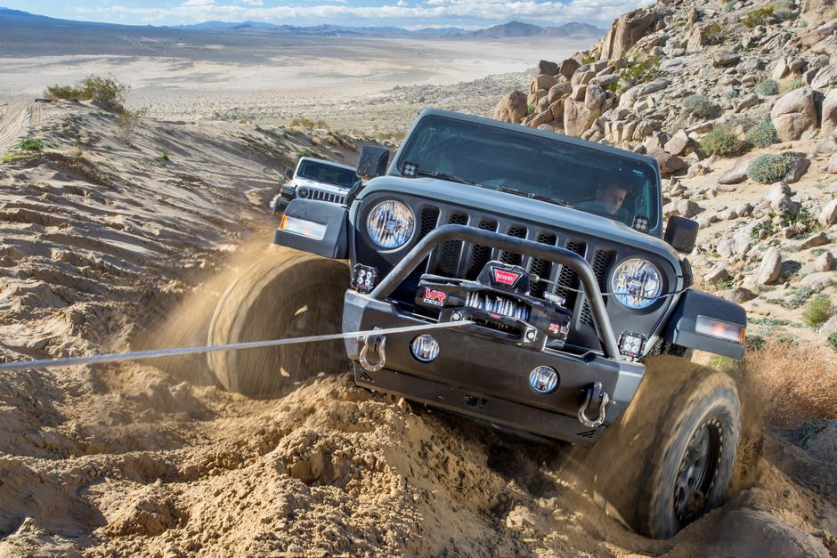

Capabilities of a Jeep Wrangler
There are many things Jeep Wranglers are capable of doing. One of these things is being able to pull another car out of the snow, mud, etc. One of the most important things that Wranglers are capable of doing is going into fourwheel drive making the Jeep Wrangler capable of driving in thick snow or mud without getting stuck. Wrangers also have great traction due to being able to go off roading along with a thing called water fording. Water fording allows a better seal for electrical connections and a way to keep moisture from getting into the engine. With this you are able to cross creeks and other small waters without there being any issues. Another thing is that Wranglers are built to be able to maneuver in various ways to be able to move around rocks or large objects. Jeep Wranglers are built with a good suspension and axel to help keep all tires on the ground to allow for good traction. Lastly another great thing that the Jeep Wrangler is capable of is ground clearance. With good ground clearance it allows the tires and suspension to move without damaging the body of the Wrangler while also having underbody skid plates to protect the underneath of the Wrangler.
